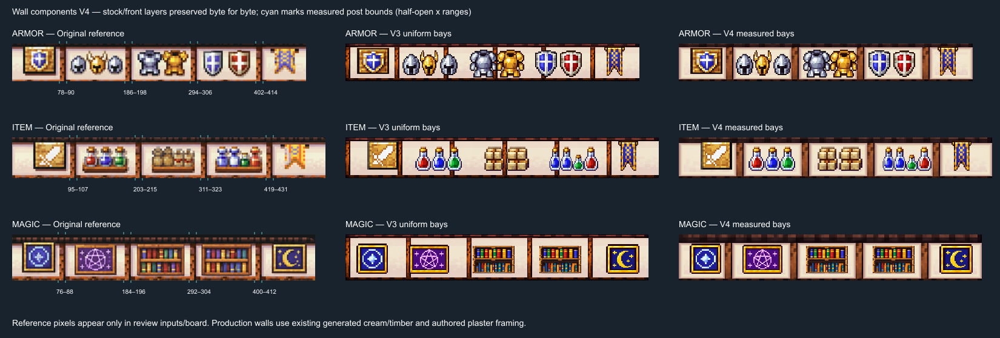
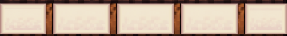
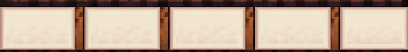
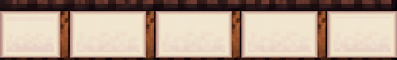

Measured room-specific wall bays, pale plaster surrounds, separate clean wall parts. Stock/front PNG bytes and stock coordinates preserved from V3.

Manifest · Verification · Build and limitations
Armor

Item

Magic
